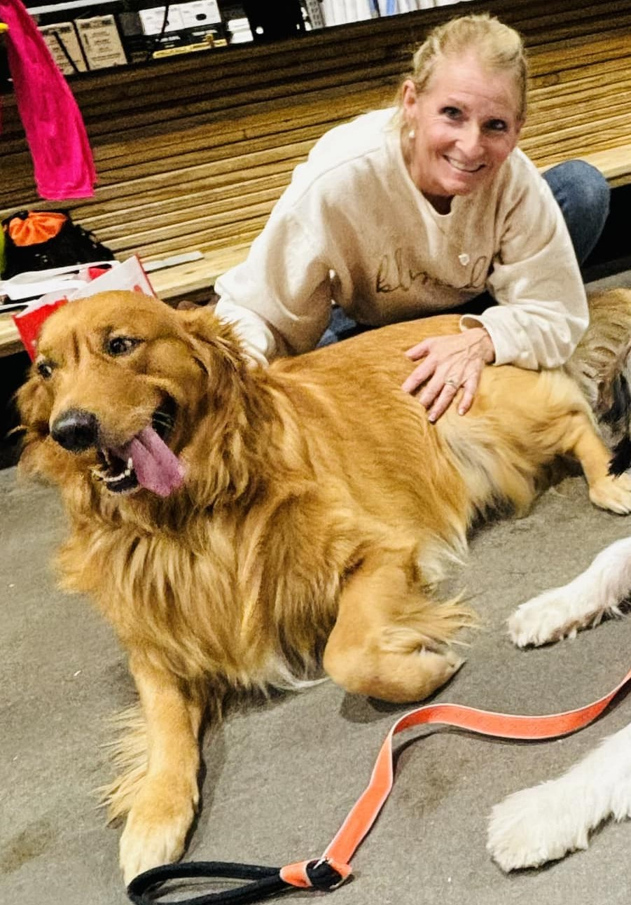

Family, we're so happy to have ours and we want to make sure our pups have one to look forward to.

Hi, I'm Tressa, and this is Shoobydua. I'm a certified AKC breeder, and this beautiful boy is our sire and an Official Certified Pet Therapy Dog. We established Three River Retrievers in 2022 and we are a professional breeder of Golden Retrievers. Our goal is to sire healthy, happy pups and find them loving families.
I personally take time off whenever a litter is close to being born, and stay with the mother during the entire process. The safety of the pups and mother is very important to me and I do everything I can to ensure they're healthy.
All of our pups are given regular veterinary checkups and care. You can come meet them! Head over to the contact us page to find out how!
Shoobydua
Sir Shoobydua of the Midwest AKA “Shooby”is a Registered and Certified Pet Therapy Dog.
His is job is to LOVE people and to bring them peace, joy and comfort. While he can go into hospitals, nursing homes, private homes or public schools…. His first love is kids. 1, 2, 3 or 10 kids the more the merrier…. He just loves to be loved and to calm a person in need.
While at home, you may find in on the back porch, in the puppy pool or on the couch. (or on the family bed)
Shooby completed his DNA/genetic testing through EMBARK and Wisdom panel with no findings.